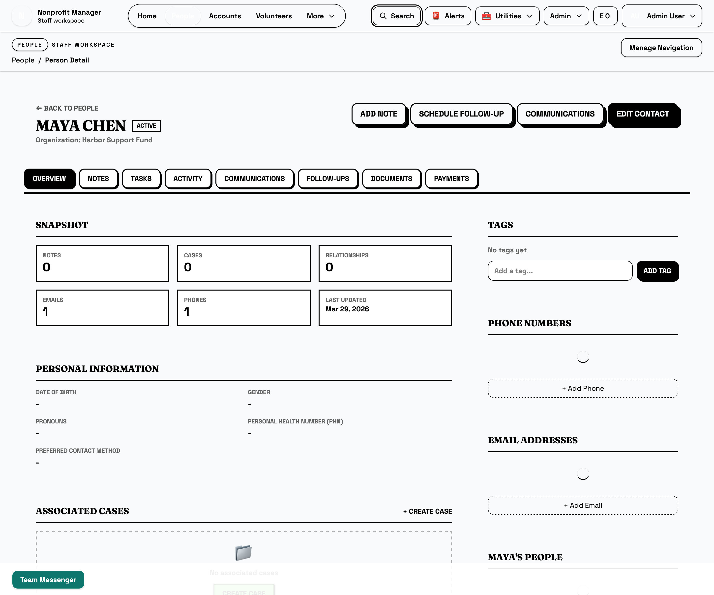
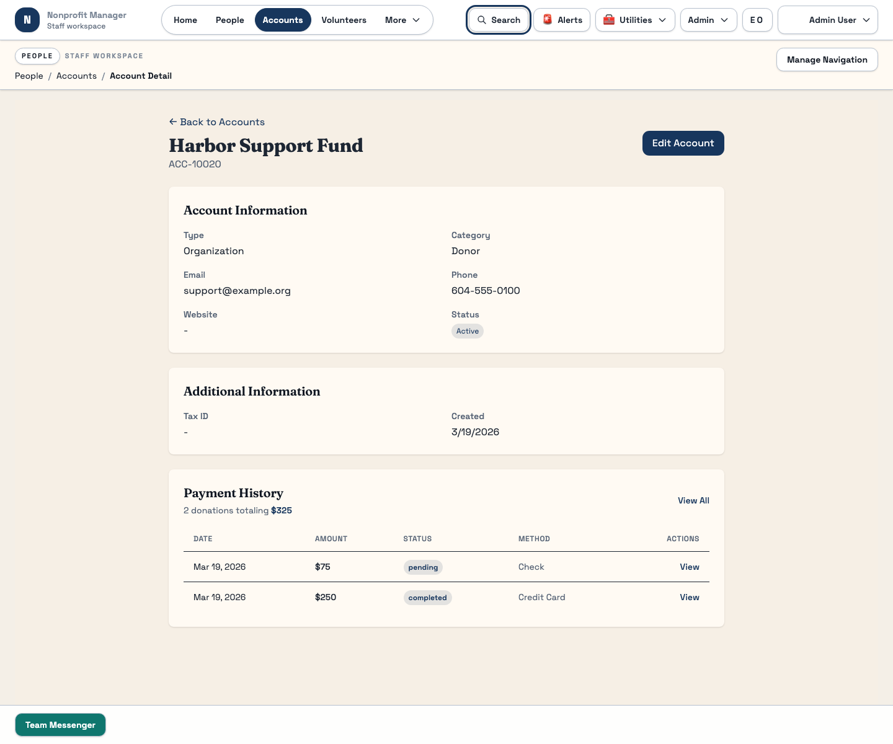

People and Accounts
Keep core records accurate before they spread into other modules
People and Accounts are the operational backbone of the staff workspace. Use this guide to create new records, search and filter them, open detail pages, manage tags and relationships, and keep cleanup decisions consistent.
What this page is for
Use this guide when you need to add or maintain the people and organization records that power outreach, events, donations, and reporting. It is the best starting point when you are unsure whether a record already exists or how a relationship should be stored.
Before you start
- Know whether you are adding an individual person or an organization account.
- Search first to avoid duplicate records.
- Have the minimum facts ready: name, contact method, and any organizational relationship.
- Use People for individuals and Accounts for organizations, households, or record containers.
Steps
- Search People before you create a record. Use the People list search box and filters such as role or active status to look for an existing match.
- Create a person only when you confirm they are new. Use New person and enter the core identity and contact details first. Add initial notes if the context matters for future staff.
- Open the detail page for ongoing work. From a person record, use the detail page to review the overview and move into notes, activity, follow-ups, documents, or payments as needed.
- Use tags and relationships intentionally. Tags are best for quick categorization, while relationships describe how one person connects to another person or support contact.
- Use Accounts for organizations and grouped relationships. Search the Accounts list, create a new account when needed, and keep account type, category, and active status accurate.
- Clean up carefully. If the record should remain part of operational history, prefer updating or deactivating it over deleting it. Delete only clear errors you are confident were created by mistake.
- Document important changes. If a contact method, relationship, or account ownership changed for a reason other staff should know, add a note rather than relying on memory.



Tip: A person record often becomes the reference point for cases, donations, and event participation. Small data quality issues here usually become bigger issues elsewhere.
What happens next
Once a person or account record is accurate, other staff can safely reuse it in events, donations, volunteer workflows, and reports. Good record quality here reduces duplicate work everywhere else in the staff workspace.
Common mistakes
- Creating a second person record because the first search was too narrow.
- Putting an organization in People instead of Accounts.
- Using notes to store data that belongs in a structured field.
- Deleting a record when it should have been corrected or deactivated.
- Adding a tag when the relationship itself is what matters operationally.
Related guides
Need help?
If you suspect duplicates, merged identities, or ownership confusion, pause before you delete anything. Ask your admin or data owner to confirm the cleanup path, especially if donations, volunteer activity, or case history might already be attached to the record.